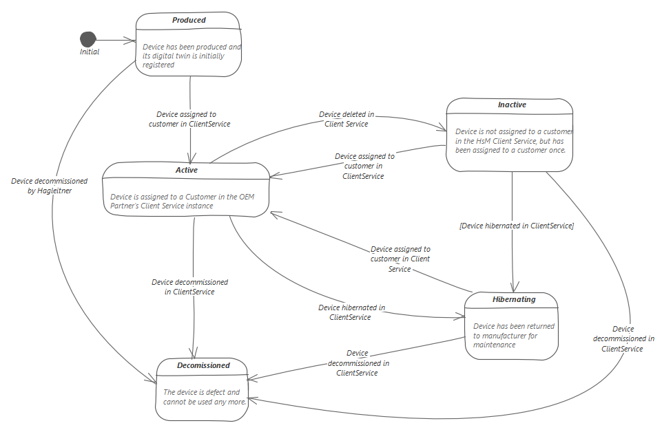

The Digital Twin Service keep track of the life-cycle status of devices.
Status
Allows transition to
Produced
Device was produced and is assigned to a specific HsM OEM Partner.
Inactive
Active
Device was delivered to a HsM OEM Partner but is not associated with a customer.
Hibernating
Decommissioned
Device was delivered to a HsM OEM Partner and is associated with a customer
Device was returned to Hagleitner and is currently not available for operation for the OEM-customer
The HsM System will not provide any digital services for this device (e.g. will disappear from all UIs)
Device is declared dead
